ALART
ブンセキ ヲ カイシ シマスカ？
- YES
- NO
01
スキナ アイコン ハ ドレデスカ？
- 
Copyright © 2018 ICON MATCH All Rights Reserved.
このサイトはおすすめのアイコンを紹介するサイトです。アイコンの利用規約は、各アイコン毎に異なります。当サイトからアイコンをダウンロどした時点で、各規約に同意したものとみなします。
- 
REPORT
✕
マツバアイコン
 松葉
松葉
マジシャンにまつわる道具やマジックをもとに不思議な雰囲気で制作。サイトにちょっとしたアクセントを加えることができます。
ゲーム系やファンタジーな雰囲気なサイト。動きが面白いサイトなどにおすすめ。